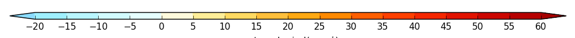

version 2.1 changes¶
Rolling set of small additions and bug fixes.
1. Log pressure axis labelling¶
Log pressure axis labelling was changed from the in-built Matplotlib labelling with used 10^3, 10^2 10^1 to 1000, 10, 1.
Done
2. Rotated grid axis labelling¶
Missing longitude and latitude labels were added to rotated pole plots.
Done
3. cscale - uniform keyword added¶
When a divergent colour scheme is used such as in example 4 in the gallery the default colour scale is stretched so that blues are below zero and reds above zero. When the number of colours above and below differ quite markedly this can give undue emphasis to data by having too strong colours in the above or below zero scale. A new keyword was introduced, uniform=True (or False), to address this issue. The default is now uniform=True for divergent data contour plots where no user colour scale has been defined:
{kind=link}
Use:
cfp.setvars(cs_uniform=False)
to revert to the previous behaviour.
4. mapset - new projections added¶
Added Mercator, Lambert Conformal, Orthographic and Robinson projections. See the Basemap documentation at http://matplotlib.org/basemap/users/mapsetup.html for calling parameters.
Done
5. lineplot - axis labelling renamed¶
xname and yname have been depreciated in favour of xlabel and ylabel. This change was made to be consistent with xlabel and ylabel as used in the con and vect routines.
Done
6. Cropped area on map lcc projections¶
Lambert conformal projections can now be cropped as in the following code:
7. Better determination of up on the Z axis¶
The CF metadata attribute of postitive for the Z coordinate is now used in the con and lineplot routines.
Done
9. con - colors option for contour lines¶
con - added colors keyword for the contour lines. This keyword takes a single colour or a list of colours. The default is 'k' or black'
Done
10. con - lines=True now the default¶
Within con the lines=True parameter is now the default. This change was made due to the complex and somewhat obscure logic in the blockfill section of code. The change will affect blockfill plots which were previously drawn with no lines using blockfill=True. The syntax for blockfill with no lines is now blockfill=True, lines=False.
Done
11. con - colorbar logic correction¶
A correction was made to the colorbar logic so that it works properly when fill=False is selected.
Done
12. cscale - new colour scale added¶
A new colour scale was added - brown to blue - BrBG.
13. stipple - added edgecolors keyword¶
The edcolors keyword was added to the stipple routine. This contrils the border colour of the filled polygon. Setting it to 'face' gives the same colour as the filled polygon.
Done
14. con - better yaxis labelling for hybrid height coordinates¶
Better yaxis labelling for hybrid height coordinates.
Done
15. lineplot - check for a 'T' axis before accessing it¶
Check if a cf-field has a 'T' axis before trying to access it.
Done
16. lineplot - check xlabel is not None before accessing it¶
Check if xlabel is not None before trying to access it.
Done
17. lineplot - Generate a more correct set of yticks if yrange < 1¶
Generate a more correct set of yticks if yrange < 1.
Done
18. con - blockfill code correction for masked arrays¶
In con the blockfill code was updated to correct an error when plotting masked arrays.
Done
19. mapaxis - change labeling in cylindrical projection¶
Change labels returned by mapaxis as below.
180, 120W, 60W, 0, 60E, 120E, 180
to
180W, 120W, 60W, 0, 60E, 120E, 180E
Done
20. con - Hovmuller user axis labeling¶
Hovmuller user axis labeling wasn't working.
Done
21. setvars - A master title for multi-panel plots¶
Added a master title for multi-panel plots to the setvars routine.
Done
22. con - Missing colorbar annotation with ptype=1¶
When making a contour plot with cfp.con(f=f, x=x, y=y, ptype=1) the default contour scaling was omitted from the colorbar label. This has now been added.
Done
23. vect - missing longitude-height vectors¶
Longitude-height vector code was missing.
Done
24. con - map colorbar labelling issue¶
In certain circumstances the colorbar labeling in a map plot was in correct. Using the string of the colorbar labels produces the correct results.
cbar.set_ticklabels([str(i) for i in colorbar_labels])
Done
25. con - blockfill incorrect for very tight contour ranges¶
When the data range is very small the blockfill contour scheme miscalculated the upper bound for the data.
Fixed
26. timeaxis - code change¶
The minimum and maximum years were not calculated due to some faulty logic.
Fixed
27. mapset - documentation improved¶
The documentation for mapset in the routine in the user guide was improved to make it flow better and include recent map additions.
Done
28. gset - ylog=True now feeds through to contour plots¶
The 2.0 code base changes removed the ylog=True feed through to contour plotting.
Done
29. lineplot - CF field incorrectly plotted¶
When plotting a CF field with a Z axis the data wasn't correctly plotted
Fixed
30. con - blockfill rewritten¶
Blockfill plots in the con routine were rewitten to use PolyCollection from matplotlib.collections rather than pcolormesh. The new method allows better control of the various colorbar extension behaviour and data masking. It is slower for larger grids than pcolormesh but more accurate.
Done
31. con - blockfill for map plots other than cylindrical projection¶
Blockfill for map plots other than the cylindrical projection was implemented. Trim the data to the required map limits to avoid them being plotted.
Done
32. axes - user defined axes¶
Axes defined with the axes command should feed through to con, vect and lineplot. The priority order of axis labeling in order of preference is: 1) user passed to routine 2) user defined by axes command 3) labels generated internally
Done
33. con - ability to swap axes for hovmuller plots¶
In Hovmuller plots sometimes the axes are show as time vs longitude or latitude. The swap_axes keyword was added to con to facilitate this.
Done
34. con - blockfill produces an error for bounded data in Hovmuller plots¶
The data bounds passed for Hovmuller blockfill plots were incorrect.
Fixed
35. jupyter notebook detection of inline images¶
cf-plot now detects the jupyter notebook magic command for inlining images: %matplotlib inline
The cfp.setvars(viewer=None) is no longer required in the jupyter notebook session.
Done
36. stipple - now works in Y-Z and X-Z plots¶
Stippling now works in Y-Z and X-Z plots.
Done
37. con - axis labels for lcc map plots¶
The axis_label_fontsize and axis_label_fontweight now apply to lcc (Lambert Conformal projection) plots.
Done
38. lineplot - user defined time axis fails¶
When making a time lineplot with a predefined gset call to set the axes an error occurs.
Done
39. con - negative_linestyle¶
con - negative_linestyle takes 'solid' and 'dashed' for Matplotlib < 2. With Matplotlib > 2 it also takes 'None', 'dotted' and 'dashdot'.
Done
40. cf-plot updated for cf-python 2.x¶
cf-plot was updated to be compatible with the 1.x to 2.x API changes to cf-python. See https://cfpython.bitbucket.io/docs/latest/1_to_2_changes.html
Done
41. levs - check extend input is valid¶
levs now checks that the input for extend is one on 'neither', 'min, 'max' or 'both'
Done
42. con - blockfill an user cscale checks¶
The blockfill contour section now checks when the user has selected a colour scale with a set number of colours this matches the number of levels that are being contoured.
Done
43. lineplot - wrong time axis annotation plotted¶
In lineplot an incorrect generic time axis annotation wass plotted. This was corrected to time, time(years), time(months) etc.
Corrected
44. con - blockfill occasionally produced an error when the field had no data bounds¶
A coding error meant that blockfill occasionally produced an error when the field had no data bounds.
Fixed
45. con - passing numpy arrays code change¶
When using con and numpy arrays the default was that the field x and y arrays had to be passed and to be consistent. This was relaxed so that if a user passes a numpy array with no x and y values then these are generated internally on a basis of 0 to number of axis points -1.
Done
46. con and stipple transparency¶
con and stipple now have an alpha keyword indicating the tranparency for the plot. The default is set to 1 giving no transparency.
Done
47. con - contour line thickness¶
Contour line thickness can now be set using the linewidths parameter to con. One value gives the same thickness for all lines. Multiple values are also accepted.
Done
48. vect - vector colours¶
vect now takes the color parameter to colour the vectors. Takes one or multiple values.
Done
49. DPI setting for PNG file output¶
A dpi setting for setvars and gopen now allows the dots per inch to be set for PNG files.
Done
50. vect - vector annotation fontsize¶
Vector annotation now uses the internal plotvars.axis_label_fontsize variable for the text size. This is set in the setvars routine. This allows multiple vector plots on a page to be scaled correctly in terms of their text size.
Done
51. gset docstring documentation gave incorrect date string order¶
The gset docstring documentation gave incorrect date string order and this has now been corrected.
Done
52. gvals modification¶
The gvals code which generates sensible values for labelling contours and axes was changed to produce reasonable levels between -1.0 and 0.1.
Done
53. levs - allow only step to generate contour levels¶
Code was added to the levs and con routines to allow step to generate the levels for the contour field without having to specify the min and max for the levels genration.
Done
54. con - blockfill transparency¶
Added alpha transparency to the blockfill contour routine. To call this add the blockfill=True and alpha=alpha keywords to the cfp.con command.
Done
55. Independent user positioning of plot figures on a page¶
Independent positioning of plot figures on a page isn't possible.
This is now possible and an example has been added to the Multiple plots on a page page.
Done
56. con - vertical colorbars don't pick up user set font size¶
Vertical colorbars did't pick up user set font size or font weight.
Corrected
57. con - addcyclic change in Basemap¶
The behaviour of add cyclic in Basemap changed
1.0.7 longitudes 1.875, 5.625, ..., 358.125 went to 1.875, 5.625,..., 358.125, 361.875
1.0.8.dev0 and 1.1.0 longitudes 1.875, 5.625, ..., 358.125 went to 1.875, 5.625,..., 358.125, 1.875
This was reported to the Basemap authors and a fix put into cf-plot so that all version above work as expected.
Fixed
58. con - better data limits when making a reduced map plot¶
When passing reduced data for a map contour plot only the longitude range was checked. This has been corrected so that the latitude range is also checked.
Fixed
60. con - merge all colorbar calls into one routine¶
An internal coding change to merge the five colorbar routines in con into one that is a separate routine. This makes it eaier to maintain the code base.
Done
61. con - colorbar changes¶
Added new functionality to the colorbar in con:
Done
62. con - longitude wrapping bug in basemap¶
As per change 57. The tolerance limit was changed from 1E-5 to 1E-4 to cope with N215 Met Office data.
Fixed
63. Introduced a ~/.cfplot_defaults file¶
A ~/.cfplot_defaults default overide file in the user home directory may contain three values initially. Please contact me if you would like any more defaults changed in this manner.
This changes the default cfplot con options from contour fill with contour lines on top to blockfill with no contour lines on top. The blockfill, fill and line options to the con routine override any of these preset values. The delimter beween the option and the value must be a space.
Done
64. setvars - introduced land and ocean colours¶
Introduced some extra plotting variables to the setvars routine to colour the land, ocean and lakes in a single colour.
Done
65. con - polar stereographic changing axis label fontsize¶
It wasn't possible to change the polar stereographic longitude label fontsize or fontweight. This is now done using the setvars routine and changing the axis_label_fontsize and axis_label_fontweight values.
Fixed
66. lineplot - twinx or twiny axes¶
It is now possible to do twinx or twiny plots in lineplot. See example 30 in graphs
Done
67. vect - polar vectors on original grid¶
It is now possible to plot polar vectors on the original grid as in example 15 in vector
Done
68. con - linestyles keyword added¶
The linestyles keyword was added to the con routine to allow user selection of linestyle. Value should be one of 'solid', 'dashed', 'dashdot' or 'dotted'
Done
69. lineplot - axes, xaxis, yaxis keywords added¶
The axes, xaxis, yaxis keywords were added to lineplot. The defaults are:
Done
70. lineplot - user defined time axes¶
A bug in the specification of user time axes in lineplot caused the user time axis to be ignored.
Fixed
71. con - user defined time vs height / pressure axes¶
A bug in the specification of user defined time axes in time vs height / pressure plots caused the user time axis to be ignored.
Fixed
72. lineplot - user specification of xlabel and xunits not properly implemented¶
The user user specification of xlabel and xunits and ylabel and yunits was not properly implemented incorrect axis labels were produced.
Fixed
73. setvars - rotated pole options added¶
Some new keywords were added to setvars that affect the plotting of rotated pole grid labelling.
To turn off plotting for the rotated gid for instance use
Done
74. Training material added to cf-plot page¶
The NCAS data tools training material one day course was added to the cf-plot web pages under
Done
75. Rotated pole grid not drawn in numpy 1.13¶
The rotated pole grid was not drawn in numpy 1.13.
Fixed
76. con - cylindrical projection xlabel and ylabel doesn't use user defined fontsize¶
The cylindrical projection contour xlabel and ylabel doesn't use user defined fontsize defined with cfp.setvars(axis_label_fontsize=22) for example.
Fixed
77. vect - vector plots now respect reduced map grids¶
When plotting vectors onto a map previous versions used a whole globe cylindrical projection. This has now changed and will plot the map to match the input vectr area unless any map settings have been changed by the user.
Fixed